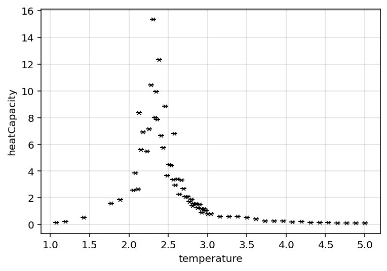

Wk 4
12/02/2026 lab log
Have generated the following datasets over the past week:
- 1000 equilibration steps, 500 simulation steps:
- 20x20
- 30x30
- 40x40
- 2000 equilibration steps, 500 simulation steps:
- 20x20
- 30x30
- 40x40
- 3000 equilibration steps, 500 simulation steps:
- 20x20
- 30x30
- 40x40
- 50x50
- 100x100 Furthermore, an additional 36 datapoints were added to the 3000 equilibration step datasets over a range \(T \in [2,3]\)
double check averaging; not weighted scaling effect on critical exponent is result of “incorrect” apparent critical temperature; critical temperature is size dependent, not the main exponent
To do list: * fix averaging * fix exponent fitting * figure out apparent vs true critical temp stuff
Averaging seems to fix it
2 methods to find “true” critical temperature (cite{labMaterials} finite-size-effects): * fit apparent critical temperatures for different sizes using \(\beta_{max} = \beta_{c} - c\cdot L^{\frac{-1}{v}}\) * Binder cumulant; \(U_{l}=\frac{1 - <s^{4}>}{3<s^{2}>^{2}}\); for \(T_{c} < T\), \(U_{l} = 0 + O(1/V)\), for \(T_{c} > T\), \(U_{l} = /frac{2}{3} + O(1/V)\); at criticallity, \(U_{l}\) trends towards constant * can find critical point by comparing \(U_{l}(\beta)\) curves for different sizes; there should be an intersection point
have implemented cumulative computation; seems to work quite well, but will need to fit cumulative distribution to plot to be able to estimate data
- fixed cumulative fit
- however am encountering computational issues; as far as i can tell binder cumulant should range
quick catchup w/Turci * make sure to double check magnetisation over range
I am a complete idiot; it seems that when the code was discarding the configs for equilibration steps, it wasn’t updating the most recent config. Therefore the massive datasets was effectively only the last 500 steps
have fixed issue and am starting to regenerate data; have attempted multithreading, but isn’t quite working; so manually setting up parallel processing.
Am currently trying to fix critical exponent fitting; as it stands cumulat seems to work reasonably well despite odd data range. Furthermore need to wait on data generation to work on that further.
Therefore trying to fix critical exponent fitting.
Successfully implemented multithreading at the dataset object; it generates configurations in parallel; so this should accelerate dataset generation by up to a factor of 16 (currently allocating 8 threads, so should be 8x faster)
General to do list: * generate data * fix exponent fitting * fully implement binder cumulate intersection function * compute critical exponents for dimension * generate prettier plots * generate “final” data * if time allows, compute critical exponents for mean field theory model (alternatively just cite values) * write report
unrelated thoughts; vague report structure: * introduction * basic motivation * ising model theory * model statement * basic observables * existence of phase transition and critical exponents * metropolis algorithm theory * binder cumulant theory * critical exponent theory * mean field theory - note minimum derivations (if time allows) * methods * briefly outline “lab process” not code architecture, but type of data generated by what methods * results * include plot of apparent critical temperatures over size; use to illustrate “apparent vs true” critical temperature * include graph of cumulant fit intersections (demonstrate finding critical temperature) * include graph of magnetisations for different dimensions in same plot * include table of exponent values for D=1,2,3, ?4?, mean field theory * discussion * TBD, depends on results, but could discuss: * convergence of critical exponents to mean field theory values (how quickly…) * slow convergence near critical temperature * apparent vs true critical temperature * computational considerations * conclusion
will need citations for following (try and get different ones for each): * statement of ising model * computation for basic observables * phase transition and critical exponents
binder cumulant theory
mean field theory derivation OR results
literature values for critical exponents
metropolis MC algorithm
probably general textbook (complexityAndCriticality may be good)
14/02/2026
Am regenerating the broken data from the past week
- 1000 equilibration steps, 500 simulation steps:
- 20x20
- 2000 equilibration steps, 500 simulation steps:
- 20x20
- 3000 equilibration steps, 500 simulation steps:
- 20x20
- 30x30
- 40x40
- 50x50
- 100x100
- 3000 equilibration steps, 500 simulation steps additional:
- 60x60
- 70x70
- 80x80
- 90x90
Furthermore, an additional 36 datapoints were added to the 3000 equilibration step datasets over a range \(T \in [2,3]\).
Have just finished the 20x20 3000 steps dataset, and its A LOT cleaner than previously




Furthermore the cumulant fit seems to be working quite well, so should be able to compute the actual critical temperature by that method once enough data has been generated. It may also be worth using the power law fit from the apparent critical temperatures as a second “cross validation” method as well.
Once both critical temperature methods are implemented, it will be possible to fit the critical functions to the data, and extract the critical exponents.
Once that is working, the “analytical machinery” for this project should be complete, and all that will need to be done is to generate appropriate data for \(d=3\) and possibly \(d=4\); and begin thinking about writing the report.
15/02/2026
minor tweaking; have added system s.t the dataset orders its data in ascending temperature order; makes handling data easier.
note to self, potentially add method to quickly regenerate data (I.E, to replace clear outliers)
Have managed to normalise cumulant and implement a cumulant critical temperature method; quick plotting yields:

Note that the plot yields 2 intersection clusters, however the higher temperature cluster better agrees with the data, so was accepted as the true values. As such Fig. 4.8 yields \(T_{c} = 2.16 \pm 0.02 º/k_{b}\); which seems reasonable examining all the plots. (however doesn’t agree with standard values of \(T_{c}=2.269\) cite{labMaterials})
Have quickly implemented a “set critical temperature” functionality to dataset objects; that way the cumulant critical temperature can be assigned to all datasets being evaluated.
The magnetisation fit still doesn’t work though.
It seems that fitting power laws is something scipy’s curvefit is ill equipped to do. THus far efforts to fit magnetisation has been fruitless. Going to attempt susceptibility instead; the hope is that since susceptibility is fit for \(T_{c} < T\) instead, that it may provide insight to wether or not the fitting issues is an artefact of the \(T<T_{c}\) data.
It doesn’t seem to work. There’s a library “powerlaw” that may be of use, however i’m unsure how to use it. I think solving this may be a tmr problem.
attempted to simply compute an initial estimate of the exponent; given \(M=t^{\beta}\) it follows that \(lnM = \beta lnt\) so \(\beta = \frac{lnM}{lnt}\). THis wasn’t expected to produce correct results, however was hoped would provide an initial guess for curvefit to work. It unfortunately doesn’t
16/02/2026
am experimenting with scipy curvefit on some idealised power law data; it seems to work in this idealised case
After some debugging, it seems the power law fit was working, but was significantly “tech indebted” so wasn’t working due to messy code.
On the 50x50 dataset, fitting \(M = b \cdot (\frac{T-T_{c}}{T_{c}})^{\beta}\) yields the following plot:

Which yielded \(b= 1.022 \pm 0.006\) and \(\beta= 0.038 \pm 0.002\). Given that the standard value for \(\beta=\frac{1}{8}\) cite{labMaterials}, it seems the measured value is off by a factor of \(~3\).
Testing the other datasets yields:
- 20x20: \(\beta= 0.041 \pm 0.002\)
- 30x30: \(\beta= 0.037 \pm 0.002\)
- 40x40: \(\beta= 0.038 \pm 0.002\)
- 50x50: \(\beta= 0.038 \pm 0.002\)
Which is odd; all of these results are in significant agreement with each other, but not with standard values. It was established the 15/02/2026 that the cumulant derived \(T_{c}\) is reasonable upon first inspection, but doesn’t agree with standard values. Setting the critical temperature to standard value of \(T_{c}=2.269\) cite{labMaterials} instead yields:
- 20x20: \(\beta= 0.66 \pm 0.004\)
- 30x30: \(\beta= 0.072 \pm 0.004\)
- 40x40: \(\beta= 0.068 \pm 0.003\)
- 50x50: \(\beta= 0.073 \pm 0.003\)
Which is an improvement, but doesn’t yet agree with standard values. Furthermore whilst these values generally agree with one another, it is important to note how small the uncertainties are. Part of this is likely due to the fact that currently the use of scipy.curvefit doesn’t include the errors in the data. This is due to there still being fitting issues when trying to incorporate the error values, but does obfuscate errors in these “final” exponent values. Particularly errors increase approaching criticality, so these may being hiding significantly larger errors that would bring.
However given these results, its worth considering the following: * Critical temperature computation - it seems to be an underestimate; why? * it may be worth crossvalidating the cumulant method against the power law method * how to incorporate errors into the curvefit * the criticality power law applies close to criticality; it may be worth curtailing the data; for instance quickly curtailing the first 6 temperatures yields: * 20x20: \(\beta= 0.073 \pm 0.006\) * 30x30: \(\beta= 0.081\pm 0.005\) * 40x40: \(\beta= 0.079\pm 0.003\) * 50x50: \(\beta= 0.081\pm 0.003\) * this curtailement wasn’t particularly rigorous, but did improve results (albeit not to within agreement of standard values)
As such, if the source of critical temperature underestimation can be found, the primary “unaccounted error” would stem from the unincorporated errors in the fit, as well as the “curtailement effect”. It is unknown however if addressing these would bring the values into agreement with standard values.
It seems that the curvefit issues with errors was due to error\(=0\) values; curtailing the 0 errors allows for it to fit (I.E, 50x50 yields \(\beta= 0.034\pm 0.005\) for \(T_{c}=2.269\)) which is visually a worse fit than prior attempts (and is further from the standard value). Therefore i suspect it may be better to use curvefit without including the errors.
On a whim, the critical temperature was set to \(T_{c}= 2.4\) (an incorrect but larger value); which yielded \(\beta= 0.22\pm 0.02\) (50x50 dataset). This is obviously an incorrect result, but it does seem to be the primary “lever” affecting the exponent value. Similarly curtailing the first 6 temperatures, and setting \(T_{c}=2.33\) yields \(\beta= 0.132\pm 0.006\) (50x50 daaset) which is closer to agreeing with standard values. again, these aren’t physically insightful results; but it gives a better idea of the relation between critical temperature and critical exponents.
To do list: * potentially implement other exponent fits; see if they: * have similar issues * if the scaling relations hold * reexamine cumulant critical temp method - maybe examine wether there are issues with cumulant fit that may be causing issues * currently i fit it to a logistic function; i’m wondering if a local power law fit may be more appropriate * potentially implement power law method for critical temperature * figure out how best to curtail data when fitting * try and ID final remaining disagreement between measured and standard values
18/02/2026
Note to self; multithreading is weird; despite interrupting the code, the threads are still running (and have done for several days); they’ve been generating data in the background without me noticing for several days now…
quickly implemented other exponent fitting methods for susceptibility and heat capacity. doing quick non rigorous tests on the 50x50 dataset yield \(\beta=0.072\), \(\gamma=0.32\), \(\alpha=0.55\) compared to standard values of \(\beta=0.125\), \(\gamma=1.75\), \(\alpha=0\). Something is going wrong here, however the fit seems to be working… Sidenote, the scaling relation \(\alpha + 2\beta + \gamma = 2\) doesn’t work, instead yielding \(\alpha + 2\beta + \gamma = 1\) First port of call will be to rigorously check these values for different critical temperatures (50x50 dataset): * standard value of 2.269 * \(beta = 0.073 \pm 0.003\) * \(\gamma = 0.32 \pm 0.07\) * \(\alpha = 0.55 \pm 0.03\) * \(\alpha + 2\beta + \gamma = 1.016\) * cumulant derived value of 2.15 * \(beta = 0.040 \pm 0.002\) * \(\gamma = 0.2 \pm 0.1\) * \(\alpha = 0.34 \pm 0.05\) * \(\alpha + 2\beta + \gamma = 0.62\) * apparent critical temperature of 2.43 for a dataset (maximum susceptibility value) * \(beta = 0.26 \pm 0.03\) * \(\gamma = 0.46 \pm 0.05\) * \(\alpha = 0.0 \pm 0.7\) * \(\alpha + 2\beta + \gamma = 0.98\) These values all disagree significantly with the standard values… What is striking is the heat capacity exponent \(\alpha\) being so large in most cases (and the apparent temperature case is only 0 because it fails to appropriately fit the data).
task list for tmr: * standardise curtailement in exponent method (have it as optional DT parameter) * implement other critical exponent methods * this includes slightly reworking graphing method to accomodate this * evaluate critical exponents relative to each other (scaling laws) * ask Dr Turci if he knows why i may be getting these underestimates * reevaluate cumulant critical temp method * potentially write up power law critical temp method; compare critical temps